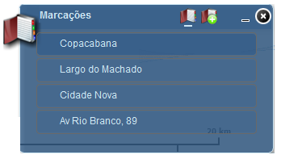

Marcações
A ferramenta Marcações armazena uma coleção de extensões de visita no mapa (ou seja, marcadores espaciais). Permite criar e adicionar seus próprios marcadores espaciais. Por padrão, estão predefinidos 4 (quatro) marcadores espaciais que estão associados no arquivo de configuração padrão.

Configurações referentes a "Marcações"
Marcações: exibe marcações predefinidas e marcações realizadas;
Adicionar Marcações: cria uma nova marcação espacial.
Fechar: fecha ferramenta Exibir Marcações;
Minimizar: minimiza ferramenta Exibir Marcações.

Configurações referentes a "Adicionar Marcações"
Caixa de Texto: texto que será adicionado a marcação;
Adicionar Marcações: cria uma nova marcação espacial.